Autor: Carlos Sesma
Fecha: 2022-12-07
El DNS es un servicio encargado de traducir nombres de dominio en direcciones IP y viceversa. Es un servicio muy importante en la red, ya que permite que los usuarios puedan acceder a los recursos de la red de forma más sencilla evitando tener que memorizar las direcciones IP de los recursos.
En este proyecto vamos a realizar la configuración de un servidor DNS en un servidor Ubuntu Server 20.04. Para ello vamos a utilizar el servicio de DNS BIND9.
Antes de comenzar con la instalación, vamos a actualizar el sistema para asegurarnos de que tenemos la última versión de los paquetes.
sudo apt update
sudo apt upgrade
Vamos a configurar la red de nuestro servidor Ubuntu Server 20.04 para que tenga una dirección IP estática.
sudo nano /etc/netplan/00-installer-config.yaml
network:
ethernets:
ens33:
dhcp4: false
optional: true
addresses: [192.168.85.1/24]
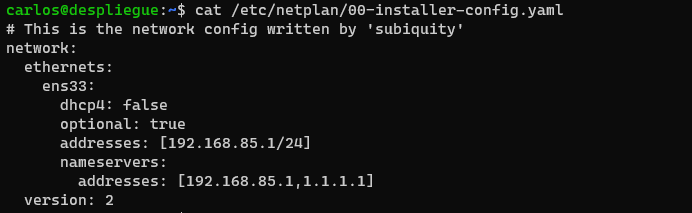
Vamos a instalar el servicio de DNS BIND9 y el conjunto de herramientas DNSUTILS en nuestro servidor Ubuntu Server 20.04.
sudo apt install bind9 dnsutils
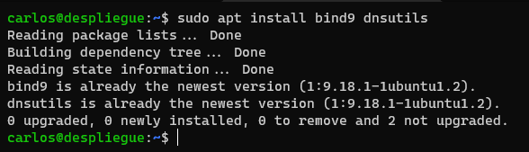
Vamos a configurar el servidor DNS para que resuelva los nombres de dominio de Internet mediante un servidor DNS externo.
sudo vim /etc/bind/named.conf.options
options {
directory "/var/cache/bind";
forwarders {
1.1.1.1;
}
dnssec-validation auto;
listen-on-v6 { any; };
};
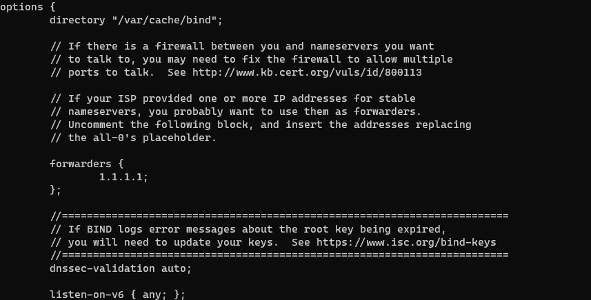
Una vez configurado el forwarder, vamos a reiniciar el servicio de DNS.
Podemos mirar el estado del servicio para comprobar que se ha iniciado correctamente y que no hay ningún error.
sudo systemctl restart bind9
sudo systemctl status bind9
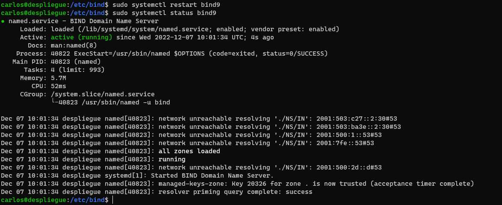
Vamos a comprobar que el servidor DNS resuelve correctamente los nombres de dominio de Internet.
nslookup blog.usarr.tech
Cuando ejecutemos el comando anterior, nos debería aparecer la siguiente salida:
Output:
Server: 127.0.0.53
Address: 127.0.0.53#53
Non-authoritative answer:
blog.usarr.tech canonical name = cname.vercel-dns.com.
Name: cname.vercel-dns.com
Address: 76.76.21.241
Name: cname.vercel-dns.com
Address: 76.76.21.9
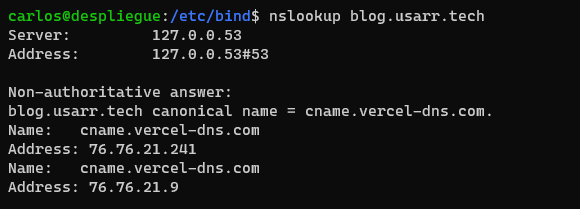
Vamos a crear la zona directa para la red dawv.net.
sudo vim /etc/bind/named.conf.local
zone "dawv.net" {
type master;
file "/etc/bind/db.dawv.net";
};
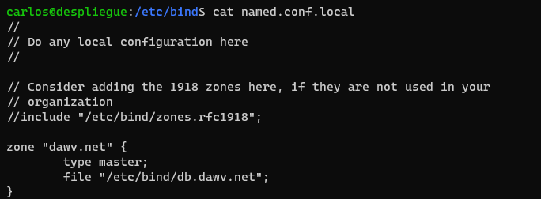
Vamos a crear el fichero de la zona directa. Para ello copiamos el fichero de ejemplo que nos proporciona el servicio de DNS BIND9.
sudo cp /etc/bind/db.local /etc/bind/db.dawv.net
Despues de copiarlo, vamos a modificar el fichero para que contenga la información de nuestra zona directa remplazando los datos de ejemplo por nuestros datos.
sudo vim /etc/bind/db.dawv.net
$TTL 604800
@ IN SOA dawv.net. admin.dawv.net. (
222 ; Serial
604800 ; Refresh
86400 ; Retry
2419200 ; Expire
604800 ) ; Negative Cache TTL
;
@ IN NS ns.dawv.net.
@ IN A 192.168.85.1
@ IN AAAA ::1
ns IN A 192.168.85.1
cliente IN A 192.168.85.254
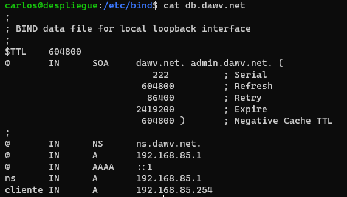
Para esto vamos a repetir los pasos que hemos realizado para la zona directa, pero en este caso vamos a clonear el fichero de ejemplo de la zona inversa.
sudo cp /etc/bind/db.127 /etc/bind/db.85.168.192
Despues de copiarlo, vamos a modificar el fichero para que contenga la información de nuestra zona inversa remplazando los datos de ejemplo por nuestros datos.
sudo vim /etc/bind/db.85.168.192
$TTL 604800
@ IN SOA ns.dawv.net. admin.dawv.net. (
123 ; Serial
604800 ; Refresh
86400 ; Retry
2419200 ; Expire
604800 ) ; Negative Cache TTL
;
@ IN NS ns.
1 IN PTR ns.dawv.net.
254 IN PTR cliente.dawv.net.
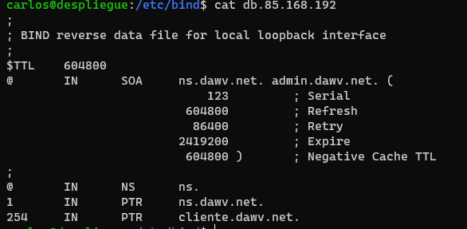
Reinciaremos el servicio de DNS para que se apliquen los cambios. Luego comprobaremos que el servicio se ha iniciado correctamente y que no hay ningún error.
sudo systemctl restart bind9
sudo systemctl status bind9
Una vez reiniciado ya nos deberia de funcionar la resolución interna.
nslookup ns.dawv.net
Output:
Server: 127.0.0.53
Address: 127.0.0.53#53
Non-authoritative answer:
Name: ns.dawv.net
Address: 192.168.85.1
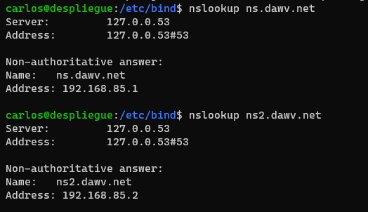
Vamos a comprobar que el servicio funciona correctamente desde el cliente.
Para ello configuramos en el panel de control de Windows la dirección IP del servidor DNS.
Para ello vamos a abrir el panel de control y vamos a entrar en la opción de centro de redes y recursos compartidos. Una vez dentro vamos a seleccionar la opción de adaptador de red. En la ventana que se nos abre, vamos a seleccionar la opción de Internet Protocol Version 4 (TCP/IPv4) y vamos a pulsar en propiedades.
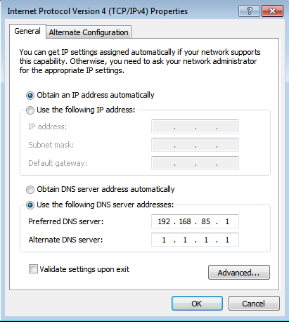
Para confirmar que se ha cambiado podemos comprobarlo desde la consola de Windows.
ipconfig /all
Y nos mostrará la información de la tarjeta de red. 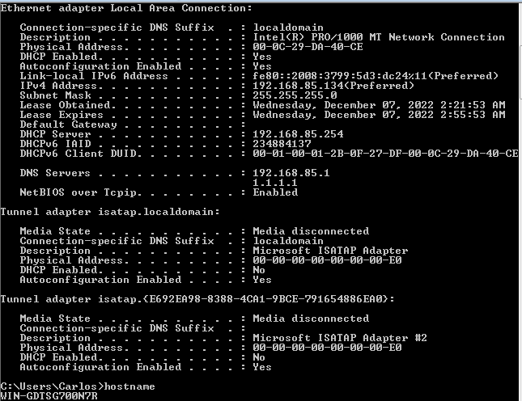
Comprobamos que el servicio resuelve correctamente desde el cliente.
nslookup cliente.dawv.net
nslookup ns.dawv.net
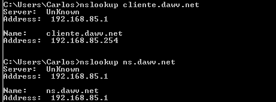 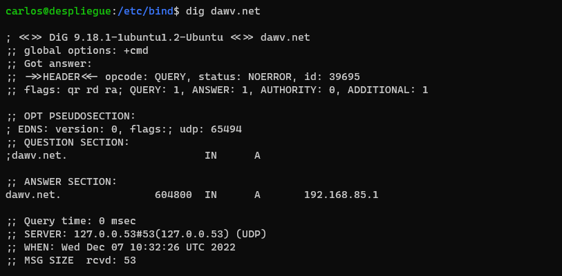